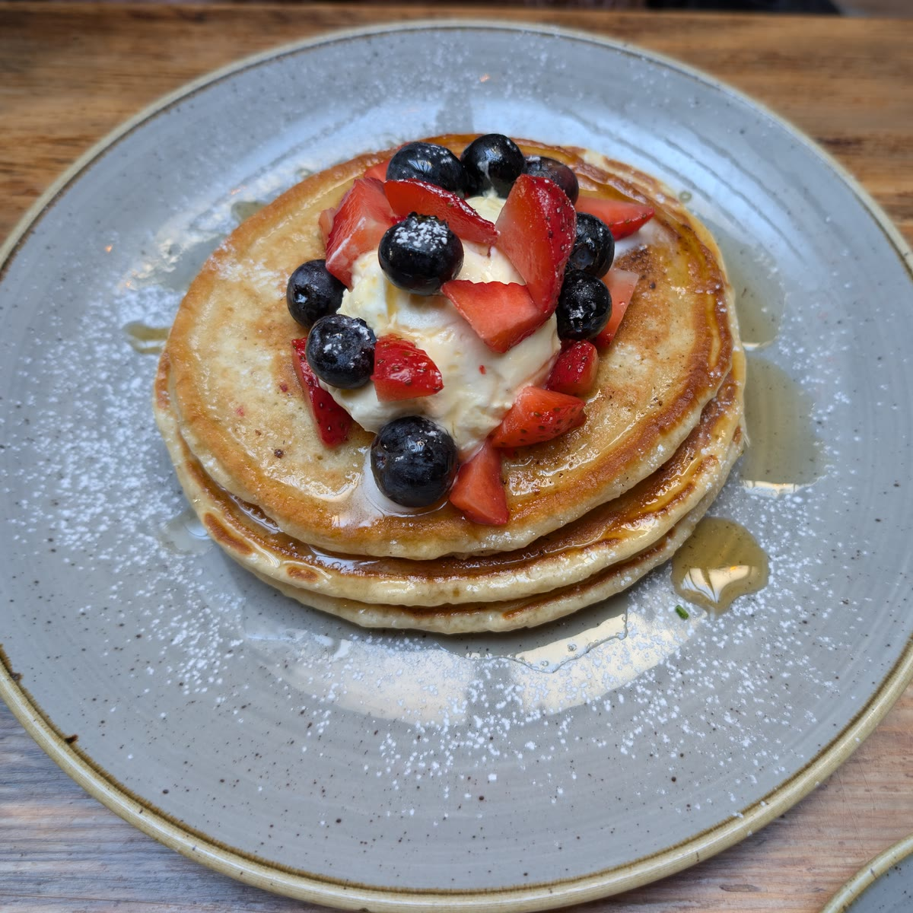

Fluffy Berry Pancakes
Thick, soft pancakes with yogurt, fresh berries and maple syrup. Ready in 25 minutes.
Ingredients
- 200 g plain flour
- 2 tsp baking powder
- 1 tbsp sugar
- 1 pinch salt
- 2 eggs
- 250 ml milk
- 30 g butter, melted, plus a little for the pan
- 100 g Greek yogurt
- 150 g mixed berries (strawberries, blueberries)
- 2 tbsp maple syrup
- Icing sugar, for dusting
Method
- Whisk the flour, baking powder, sugar and salt in a large bowl.
- Beat the eggs with the milk and melted butter, pour into the dry ingredients and stir until just combined. A few lumps are fine.
- Heat a non-stick pan over medium heat and brush it with butter. Add about 3 tablespoons of batter per pancake.
- Cook until bubbles appear on top, about 2 minutes, then flip and cook 1 minute more.
- Stack the pancakes, top with yogurt and berries, drizzle with maple syrup and dust with icing sugar.